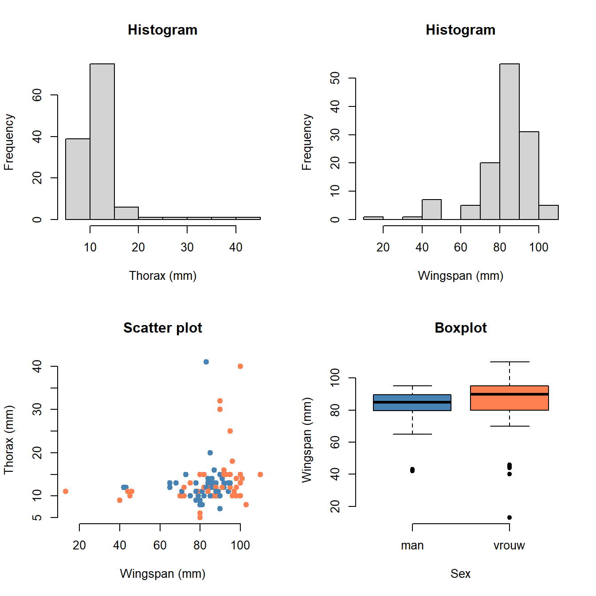

Chapter 9 Grasshoppers
In this chapter you will compare two means using a \(t\)-test.

9.1 Getting Started
We are going to compare the mean thorax length and wingspan of male and female grasshoppers.
- If you haven’t already, install RStudio;
- Download the data. If it is an Excel (.xlsx) file, open it in Excel and save as comma-separated values (.csv) first;
- Open RStudio and create a new R markdown file. Save this file to the same folder as the data!
- Go to Session > Set Working Directory > To Source File Location. R now knows where to look for your data;
- Create a new code chunk and run the following code:
From here on out, just read the text, run the code in R, adjust the R code if needed, and answer the questions.
Note: For the sake of privacy, this page uses a version of your data with scrambled names. I have also not linked the actual data. Please ask an assistant if you can’t find it.
If the code ran successfully, you will have an object called grasshoppers in your workspace. You can view it by clicking it, or by running:
You probably have better things to do today than type long names, so let’s make the variable names a bit shorter:
Does R understand which variables are numbers and which are something else? Let’s check:
## 'data.frame': 200 obs. of 7 variables:
## $ Name : chr "naFan" "llEl" "MeMe" "eueort" ...
## $ Affix : chr "van" "" "" "de" ...
## $ Surname : chr "RmesoasR" "aBBa" "Kunenn" "yuyyn" ...
## $ Group : chr "A" "A" "A" "A" ...
## $ Thorax : int 13 10 13 15 11 13 15 10 12 15 ...
## $ Wingspan: int 94 79 78 80 84 68 100 75 87 90 ...
## $ Sex : chr "man" "man" "man" "vrouw" ...Question:
- Is the data read correctly into R?
- What do you think
chrandintmean?
9.2 Plotting the Data
Just looking at code and numbers is a bit stale. So let’s start off by making some relevant plots:
par(mfrow = c(2, 2)) # Plot in a 2x2 grid
hist(grasshopper$Thorax, col = "lightgray")
hist(grasshopper$Wingspan, col = "lightgray")
plot(Thorax ~ Wingspan, data = grasshopper, col = factor(Sex))
boxplot(Wingspan ~ Sex, data = grasshopper, col = c("blue", "orange"))
par(mfrow = c(1, 1)) # Restore the default
Question:
- What does each plot show?
- Can you change the code to make different plots? (You can try changing the variable names, or change the graphical parameters.)
9.3 Creating a Subset
We just read the whole data set. It contains the data from all groups Let’s make a subset of the measurements performed by group A:
What does this code do?
Subset <-: Create a variable namedSubset;grasshopper[x, y]: From the data setgrasshopper, select only rowsxand columnsy. Ifyis left blank, it selects all columns;10grasshopper$Groep == "A": From the data setgrasshopper, select the variableGroupand check if it is equal to the valueA(TRUE) or not (FALSE).
Question:
- Can you change the code to make a subset of your own group? (Skip this if you happen to be in A.)
- Make two more subsets called
MaleandFemale, which contain only the measurements of their respective sex. - (Optional) Using R code, can you make a subset that contains only the male measurements, and only of your group?
9.4 Comparing Means with a \(T\)-Test
Below is an example of a \(t\)-test, using some standard data in R:
##
## Two Sample t-test
##
## data: extra by group
## t = -1.8608, df = 18, p-value = 0.03959
## alternative hypothesis: true difference in means is less than 0
## 95 percent confidence interval:
## -Inf -0.1076222
## sample estimates:
## mean in group 1 mean in group 2
## 0.75 2.33This particular \(t\)-test is a one-sided \(t\)-test for equal variance. The output shows that the mean of group 1 is \(0.75\) hours of extra sleep, while the mean of group 2 is \(2.33\). The \(p\)-value for this test is \(0.0396\). If we use a level of significance of \(\alpha = 0.05\), then group 2 is has a significantly larger mean than group 1, because \(0.0396 < 0.05\).
Question:
Watch the video below and choose a \(t\)-test you deem appropriate for:
- Comparing male and female thorax length;
- Comparing male and female wingspan length.
(They could be the same, just explain briefly why you chose that test.)
Question:
- Perform the tests you chose for (1) and (2) in R and draw a conclusion. Have a look at how the example was coded using the
dataargument and adjust it to make it work for the data of your group (Subset). You may use the same level of significance \(\alpha = 0.05\). - Compare your results with at least one other group. If your conclusion differs, can you explain why?
- (Optional) You performed two tests. That means that both can result in a false positive. With \(\alpha = 0.05\), what is the chance of at least one false positive when performing two tests?
- (Optional) Did we now prove that grasshopper males and females (don’t) differ in physical dimensions? What are some of the limitations of this comparison?
Whenever you see square brackets in R, just think of them as “where”. A data frame has both rows and columns, so for example
X[1, 1]means row 1, column 1.X[1, ]means row 1, all columns, andX[, 1]means all rows, column 1.↩︎